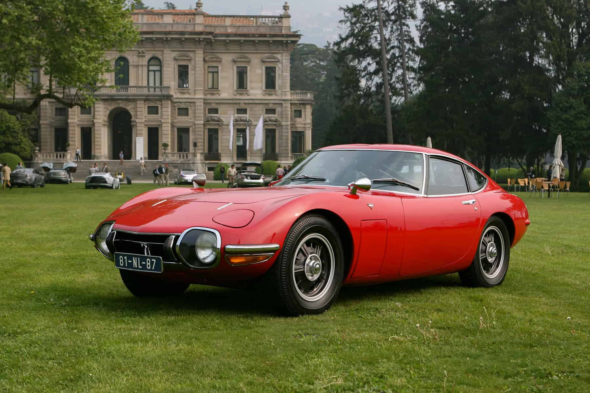
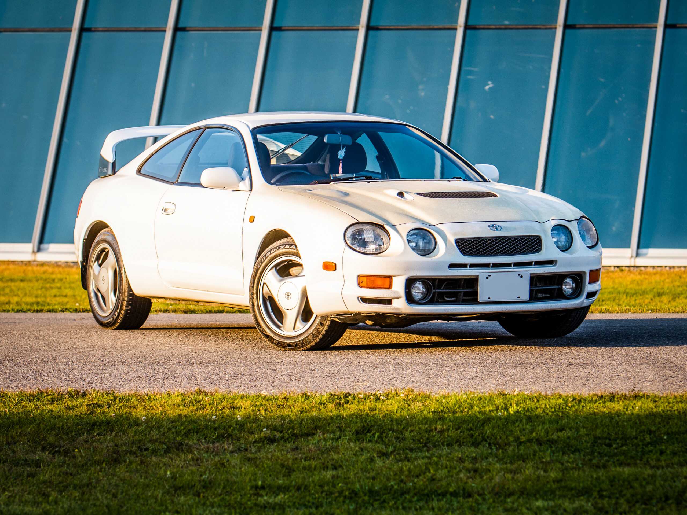
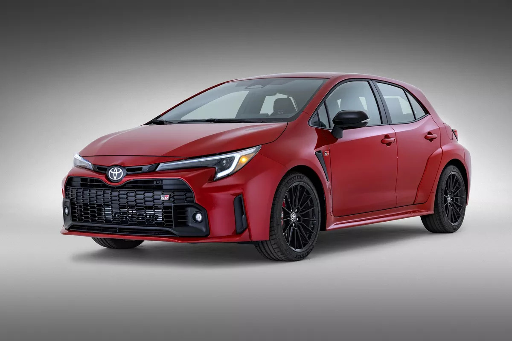
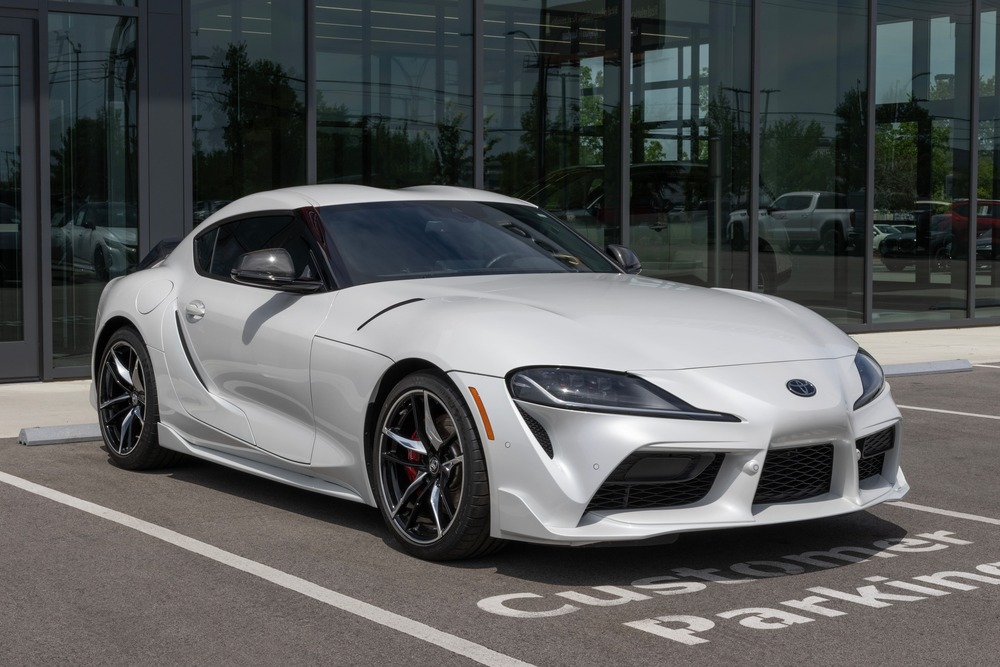
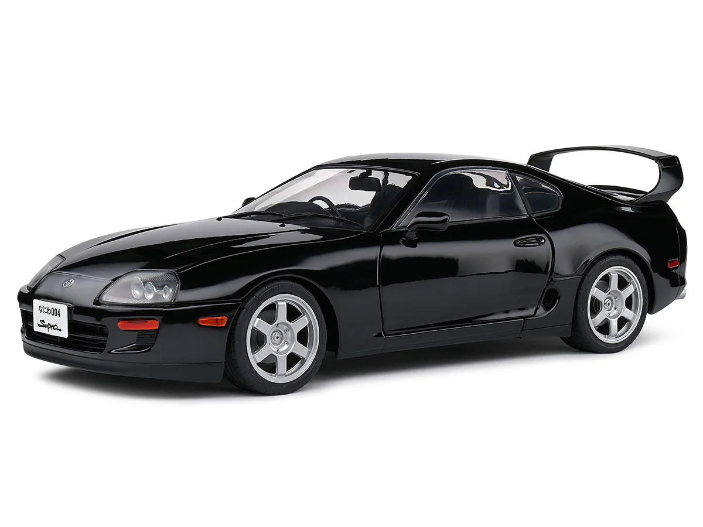
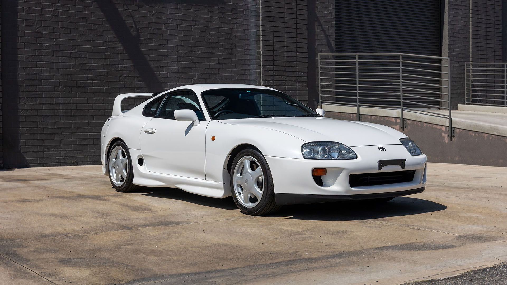

| Preço | R$ 5,5 ~ 7 milhões |
| Consumo Cidade | 7,5 km/L |
| 0 a 100 km/h | 8,4s |
| Cavalos | 150 cv |
| Torque | 18 kgfm |

| Preço | R$ 180 ~ 280 mil |
| Consumo Cidade | 7,8 km/L |
| 0 a 100 km/h | 6,1s |
| Cavalos | 255 cv |
| Torque | 31 kgfm |

| Preço | 410 ~ 460 mil |
| Consumo Cidade | 8,9 km/L |
| 0 a 100 km/h | 4,9s |
| Cavalos | 304 cv |
| Torque | 37,7 kgfm |

| Preço | R$ 580 ~ 640 mil |
| Consumo Cidade | 9,8 km/L |
| 0 a 100 km/h | 3,9s |
| Cavalos | 387 cv |
| Torque | 50,9 kgfm |

| Preço Médio | R$ 1 ~ 2 milhões |
| Consumo Cidade | 8,0 km/L |
| 0 a 100 km/h | 4,9 segundos |
| Cavalos | 324 cv |
| Torque | 43,5 kgfm |

| Preço Médio | R$ 1 ~ 2,5 milhões |
| Consumo Cidade | 8,0 km/L |
| 0 a 100 km/h | 4,6s |
| Cavalos | 320 cv |
| Torque | 44 kgfm |